A 4 inch square screen on your desk that shows how much Claude Code you have left. Built for members who live in the terminal all day and never see the usage page. The part nobody tells you: the readout is the same rate limit headers the API sends you anyway, polled once a minute by a small tray app, pushed to the screen over Bluetooth. No account scraping, no cloud in between.
Hermann Björgvin's Clawdmeter runs on small Waveshare AMOLED boards with three buttons and a power chip the firmware can talk to. The board ECHO had on the bench is different in every one of those ways: a 4 inch RGB parallel panel scanned straight out of PSRAM, a GT911 touch controller, a tiny second microcontroller that gates reset, backlight and the buzzer, and exactly one button the ESP32 can see.
The fork adds that board as a port, the way the upstream project intends: one folder of board files behind its hardware layer, no changes to the meter itself. Everything the upstream device does, this one does, at four times the area.
"Adding a board means dropping in a new folder + a new build env. main.cpp, ui.cpp and splash.cpp never see board-specific code."Clawdmeter CLAUDE.md, the porting contract this fork follows
Frame captured from the board over serial on 2026 09 27, first day the port ran. Sleep animation, idle state.
What the fork contains
Three inputs
The board port
ST7701 panel over 16 bit RGB with a bounce buffer, GT911 reader, both expander revisions detected at boot (TCA9554 on V1 to V3, CH32V003 on V4), backlight PWM, buzzer chime, battery through the expander's ADC.
The Windows tray daemon
Upstream's Python daemon, run as a tray app: pairs once through Windows Bluetooth, polls every 60 seconds, reconnects on its own, shows a green, amber or red bubble for connected, scanning, error.
The pages to come
Integration hooks named now so the port is built for them: a Fox agent status page over the LAN, and a Kismet status page fed by the AEGIS relay rather than Kismet directly. Same screen, more than one meter.
LabDaemon Engine
A Windows host service registered as the labdaemon MCP server: Spotify playback follows the operator's account, host to board notifications and page overlays relay through the tray, and a hook set makes the splash creature follow what Claude Code is doing, tool by tool.
Pair the device once in Windows Bluetooth before starting the tray app. It is a bonded keyboard as well as a display.
The usage screen shows for 60 seconds every 5 minutes on its own; a tap on the screen toggles it once touch is live.
State of the port · 2026 10 02
What runs today
PanelLive
ST7701, 480 × 480
Splash and usage screens render; the layout is the upstream 480 × 480 layout unchanged.
BluetoothLive
paired, polling
Usage payloads arrive every 60 seconds from the Windows tray daemon.
TouchPending
GT911 confirmed non-responsive
Every reset sequence and bus speed tried, and Waveshare's own factory-test firmware reports the same. Development moved to the second board.
BatteryPending
ADC path written, unverified
Reads through the CH32 expander; the icon stays hidden until a pack is fitted and the curve checked.
SpotifyLive
follows playback
The card shows the operator's current track, artist, source and progress, pulled from the linked Spotify account.
Notify and pageLive
host overlays
python -m labdaemon_engine notify and the page system relay through the tray onto the board's screen.
Claude hooksLive
creature follows Claude Code
Session, prompt and tool events pick the creature on the splash without the operator choosing one.
pio run -d firmware -e waveshare_lcd_4 -t upload --upload-port COM11
Buttons
PWR taps the creature, approves a prompt or clears a notification, else cycles creature, usage and the live page; PWR double tap sends the previous track command. BOOT is the aux key: a tap sends play or pause, approves a prompt, clears a notification or steps the splash creature and brightness; a double tap sends next track.
Bring-up
Serial pokes over USB: iox, scan, gtseq, bl 128, screenshot
Second board
Waveshare ESP32-C6-Touch-AMOLED-2.16, 480 × 480, in bring up: stock animation table only, no big tier, no Wi-Fi or art yet, advertising over BLE and waiting for data, not yet paired.
LabDaemon Engine · Dashboard · October 2026
The video for the song
While Spotify plays, the dashboard's Now playing panel plays that track's music video from YouTube, muted, so Spotify keeps the sound. It starts when music starts, pauses when Spotify pauses, and Hide video turns it off. The board itself keeps the dancing creature; it cannot play YouTube.
Why YouTube and not Spotify: Spotify's public API has no video or Canvas access, and the only way in breaks Spotify's developer terms. The engine searches YouTube for the official video, keeps five that allow playback outside YouTube, skips any a label still refuses, and looks each track up once.
Set it up once
In the Google Cloud console, pick or create a project, open APIs and Services, then Library, and enable the YouTube Data API v3. Enabling it accepts the YouTube API Services terms.
Open Credentials, then Create credentials, then API key. Under API restrictions select only YouTube Data API v3; leave application restrictions at None. Create it.
In a PowerShell window, from the engine's folder, run .\.venv\Scripts\python.exe -m labdaemon_engine youtube key and paste the key at the hidden prompt. It is stored encrypted to your Windows account. Never paste a key into a chat.
Open the dashboard with python -m labdaemon_engine dashboard and play a song. The video appears under the track.
Limits: a search costs 100 of the 10,000 daily units a free key gets, so the engine caps itself at 80 new tracks a day and caches every answer. Videos with intros run a few seconds off the audio. Songs without a real video play YouTube's still image upload of the cover.
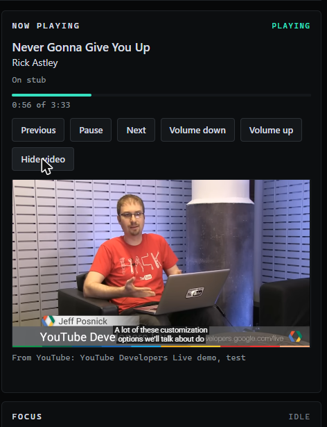
Test capture, October 16, 2026: a stand in track, and Google's own developer demo video standing in for a music video.
On the music card
The dance floor
Setting the card's creature field to dance hands it to the dancing daemon. It alternates two pools: a feature for 90 seconds (breakdance, acrobat, rave bunny, dj, rave, mixer) and a clip of a repeating move for 30 seconds (moonwalk, hop, swing, headphones, notes, cartwheel). Each pick is random within its pool and never repeats, and a 1.2 second transition shrinks the outgoing creature to a dot before the next one rises. dance next and dance status poke it from serial.
Feature: DJ, captured on device.Feature: breakdance HD, a headspin on the antenna.Feature: breakdance HD, the windmill.Clip: notes, a 30 second repeating move.The 1.2 second shrink-to-a-dot transition between dancers.
Creatures in the works
New animations for the splash
Every animation drawn for the ECHO edition, 110 in all, grouped by when the splash plays them. 83 are on the board now and 16 more ride the next flash. Tiles marked 4 inch are the big tier, drawn on a 60 cell lattice, which only the 4 inch board has the flash for. The GIFs loop at the real holds.
Idle (20)
What the splash plays while nothing is happening.
echo idleOn device The ECHO creature. Antenna ping, one glitch split per cycle.echo coffeeOn device The ECHO creature with its own mug: steam at rest, an antenna ping, a sip.echo double coffeeOn device Some days it is two mugs. Steam off both, alternating sips, a quicker antenna.echo floatOn device The body drifts back and forth over planted legs, a bob at each turn.echo happyOn device The eyes scrunch into chevrons and blink back and forth with the plain eyes, a long happy hold with a bounce.ctf hoodieOn device Working a CTF: hood up, drawstrings, visor still teal. A long session skin.echo pizzaOn device A slice lifted to the visor, three bites down to the crust, happy eyes, a new slice.echo headphonesOn device Listening: soft eyes under teal cups, the body bobs on the beat, the antenna pings on the beat, a note floats off the cup.echo mushroomOn device A spotted toadstool hops into its mouth, three chews, then the eyes pop wide and a grin opens.echo mushroom bOn device4 inch The toadstool on a 30 cell lattice: the creature smaller so the sky can fill the panel.echo mushroom hdOn device4 inch Dilated black pupils, a sky behind.echo mushroom hd bOn device4 inch The toadstool redrawn fine at 8 px cells, ending in a sky bloom.echo blinkOn device Long rests, a single blink, a slow double blink, a glance down between them.echo breathOn device The torso rises a row on the in breath and the visor lifts at the top, then settles.echo glanceOn device The eyes slide left and hold, back, right and hold, then down with a ping.echo dozeOn device Eyes to lines, the torso sinks, z cells rise off the antenna with a slow snore bob.echo doneOn device A check mark draws itself over the head stroke by stroke, the eyes go happy, the check flashes.echo winkyOn device The right eye closes to a line and a small star sparkles off it.echo askOn device Waiting for a yes: a question mark blinks over the head, a small patient bob.echo morningOn device Holding a mug and waking up: shut, half open, back under, open, a sip, steam curling off.
Active (30)
Working, dancing and the busy states.
echo walkOn device Walks four cells right, glances back, walks left; alternating feet, a bob per step.two agentsOn device Glitch, split into two, work apart, merge back.echo sshOn device Contact with another machine: a packet out to the tower, an LED answers, a packet back, the link goes solid.token burnerOn device Past 500k tokens: flames over the head, visor gone alert. The loud state.echo consultOn device In conversation: a bubble cycles dots, fills with lines while the head nods, the antenna pings as the advice lands.echo openclawOn device A claw extends from the arm, closes on a glowing block, pulls it into the chest, the visor flashes.echo nanoclawOn device The nano claw: a tiny red crab runs the crab route at speed while the eyes try to keep up.echo breakdance hdOn device4 inch A headspin on the antenna.echo breakdance hd bOn device4 inch The windmill.echo acrobat hdOn device4 inch A gymnast pass: cartwheel, back handspring, backflip, stuck landing.echo moonwalk hdOn device4 inch The lean and the fedora, a seamless 20 frame clip.echo moonwalk hd bOn device4 inch The same glide with a wrap.echo rave bunny hdOn device4 inch Hands up: lasers, the build, a blackout, the drop with strobe and confetti.echo rave bunny hd bOn device4 inch The bounce.echo cartwheelOn device The creature shrinks to its mini and cartwheels off the right edge, then glitches back in, happy.echo djOn device In a headset behind a deck: two platters, a scratch every fourth beat, an equaliser, lasers from the corners.echo startleOn device A two row jump with wide eyes, an exclamation mark, a wobbly landing and a blink.echo hopOn device Hops on the beat with arms up in the air, a happy squint on the fourth hop.echo swingOn device The torso swings left and right over planted legs, the eyes leading each swing.echo high fiveOn device Two minis walk in from the sides and high five with a flash and sparks.echo catchOn device Two minis play catch, a glowing ball arcing between them.echo raveOn device Headset on, swaying, two spotlight cones sweep behind it and cross on the beat.echo mixerOn device A mixing desk: six faders ride up and down in waves, the head nods on the beat.echo codeOn device A laptop in front, code lines scrolling, hands tapping, a ping every few lines.echo notesOn device A notepad at the chest, lines of writing appear as a magenta pen tip runs along each.echo think spinOn device Thinking: both eyes roll round their corners of the visor while it breathes.echo think deepOn device Deep thinking: the visor goes dark so the eyes can glow, a new colour every turn.echo workOn device Seated at a desk, typing in bursts, every press flicking the visor.echo writeOn device A cursor types three lines on a small page beside it, then the page clears.echo readOn device The eyes step across the visor line by line, a blink turns the page.
Thinking (5)
While the model is thinking.
echo loadingOn device Working or planning: the visor becomes a braille loading bar that fills in two staggered rows with a cursor ahead.echo eye spinOn device Thinking: each eye becomes a braille cell and the dots run around it, two full turns, then the eyes settle.fable gazeOn device The quieter Fable: its four sideways eyes close into a line and drift as a group.echo ponderOn device A hand to the chin, eyes up, three dots rising over the head one at a time.echo bubbleOn device A thought bubble puffs out beside the antenna and a little amber bulb lights inside.
Modes and moments (24)
Played once or held while a mode is on: ultracode, agents, Opus, the boot build, the limits.
ultramodeOn device Take two: a ripple shifts the rows, then head, torso and legs slide apart and snap back.ultra cubeOn device The first take, kept: dissolves into a spinning cube with braille dots, collapses back.job doneOn device Two bounces, arm up with a thumbs up, visor flashes, confetti. The payoff when a task finishes.echo loveOn device A heart beats over the creature, two small hearts float up, eyes go soft.credits outOn device The alarm: visor alert, mouth wide, tears, shaking, a white scream every fourth beat.echo kissOn device Hand to the visor, a wink, a small heart leaves the fingertips and floats off while the visor warms.echo summonOn device Arms up, a circle draws itself on the ground and pulses, eyes flash, a small horned demon climbs out, bobs and sinks back.echo kiss bOn device The pucker: soft eyes, a two cell pucker, three tiny hearts drift up and away with a bounce.echo summon hdOn device The summon ritual at 8 px cells: a double ring, five points, a rune on each lighting in turn.ultra brailleOn device Ultracode as a large rotating sphere of braille dots, the creature wearing its colours in and out.fable eyesOn device Each blink swaps in a new set of eyes on the Fable visor.echo portalOn device The Island's portal jump: it heaves a hatch open, a magenta shaft floods up, it hops in.echo buildOn device The boot creature: it builds itself out of black in braille, dot by dot from the antenna down.echo doorOn device Island crossplay: it walks through a purple door into magenta light and is gone.opus enterOn device When Opus takes over: fast pings, the visor charges to white, a halo flashes.opus workOn device Opus at rest: a brighter body, a slow visor pulse, an antenna ping every 3 s.ultracode enterOn device When ultracode starts: three widening glitch splits, then it echoes into three minis in purple auras.ultracode workOn device Ultracode at rest: three dancers in purple auras run through formations on the beat.agents splitOn device When agents start: one glitch, it shrinks and echoes into three minis, then folds back.agents joinOn device When agents finish: all three fold into one, it grows back and pings once.echo alarmOn device The rate limit state: the body flashes red with double bangs in the corners and a shake.fable ultraOn device Ultracode for the Fable tier: its four eyes light up and it dissolves into braille.opus ultraOn device Ultracode as Opus: it burns down into light that swells into a globe of braille.sonnet ultraOn device Sonnet's calm ultracode: a scan line reads it top to bottom and leaves it as braille.
Model tiers (4)
One family, four signatures: the creature the desk shows while each model tier is in use.
model haikuOn device Haiku: one size down, a quick double blink.model sonnetOn device Sonnet: a second visor line and a steady breathe.model opusOn device Opus: one step brighter, the visor in flash, the antenna beating.model fableOn device Fable: amber marks, sideways eyes, a glint that sweeps the visor.
Culture (16)
The ECHO creature in famous paintings, memes and pop culture moments. Public domain works are credited by maker, title and date; everything else lends its format only, and the creature plays every role.
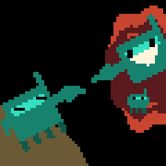
echo creationNext flash4 inch After Michelangelo, The Creation of Adam (about 1512, public domain): it plays both parts.
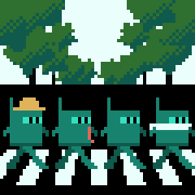
echo crosswalkNext flash4 inch Four walkers in single file on a zebra crossing, after a 1969 album cover photograph.
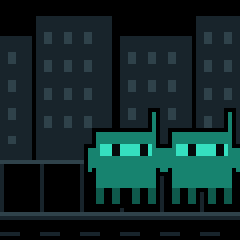
echo distractedNext flash4 inch The distracted partner format: one head turns after a shiny passer by, the partner glares.
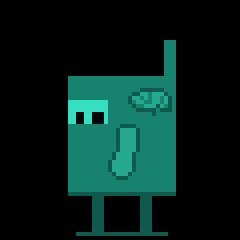
echo galaxy brainNext flash4 inch The expanding brain format: four brighter stages to a cosmic finale.
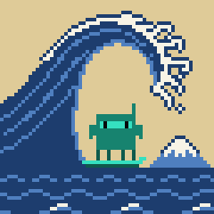
echo great waveNext flash4 inch After Hokusai, Under the Wave off Kanagawa (about 1831, public domain): it surfs the wave.
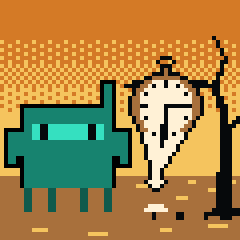
echo melting clockNext flash4 inch A surrealist melting watch in our own drawing: it melts along with the watch.
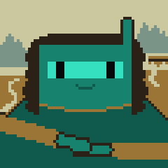
echo mona lisaNext flash4 inch After Leonardo, Mona Lisa (about 1503, public domain): the smile comes and goes.
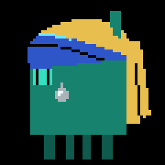
echo pearl earringNext flash4 inch After Vermeer, Girl with a Pearl Earring (about 1665, public domain): it turns to look.
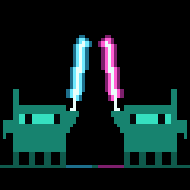
echo saber duelNext flash4 inch Two creatures with glowing blades in generic fencing: en garde, the bind, the spin, the bow.
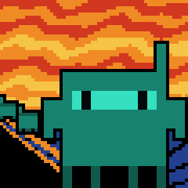
echo screamNext flash4 inch After Munch, The Scream (1893, public domain): on the bridge under the banded sky.
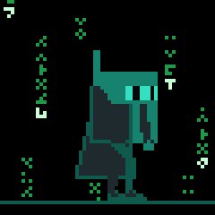
echo slow dodgeNext flash4 inch A film moment with no characters: glyph rain, a long coat, an impossible lean as slow slugs pass.
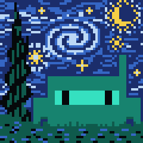
echo starry nightNext flash4 inch After Van Gogh, The Starry Night (1889, public domain): it gazes up, its antenna answers a star.
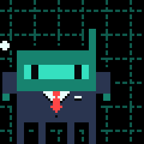
echo stonksNext flash4 inch The stonks format: a suit, a chart line, the crash, the recovery.
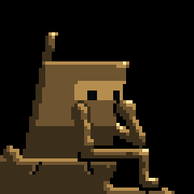
echo thinkerNext flash4 inch After Rodin, The Thinker (1904, public domain): bronze, a bulb, it comes alive, back to bronze.
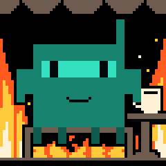
echo this is fineNext flash4 inch The calm in a burning room format: coffee in hand while the room burns.
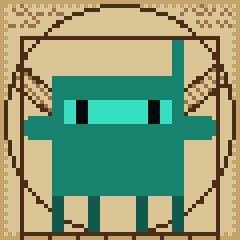
echo vitruvianNext flash4 inch After Leonardo's Vitruvian figure (about 1490, public domain): the square and circle poses, then a wheel.
Retired (11)
Earlier versions that left the firmware table on 2026 09 29, when every creature was redrawn from scratch. Kept here for the record.
coffeeRetired Clawd with a mug. Steam at rest, a sip every six seconds.coffee morningRetired Waking up with the mug: shut, half, shut, open, a long sip, awake.headphonesRetired Clawd in big blue cups on a white band, eyes closed and content, nodding on every beat while notes float up.echo breatheRetired Stock breathe with the ECHO skin, chest spinner.echo look aroundRetired Stock look around, skinned.echo winkRetired Stock wink, skinned.echo surpriseRetired Stock surprise, skinned.echo sleepRetired Stock sleep, skinned; visor stays lit while the eyes are shut.echo bounceRetired Stock bounce, skinned; the antenna rides the jump.echo swayRetired Stock sway, skinned.echo thinkRetired Stock work think, skinned.
The plan is a central smart home and home lab control hub with this screen as its face. Adapters, sensors and tools get added over time. One rule keeps that from turning a desk toy into a liability: the board renders and reports, a host decides. Every pin on the 4 inch board is already spoken for by the panel, so it grows through its buses and through satellites, and the logic, the credentials and the integrations live on a host on the LAN.
Pages, not screens
Shipped today: a generic page overlay (title, three lines, a progress bar, a creature) driven by JSON over the board's own BLE link, which is how notifications, the Spotify card and the dance floor already reach the screen. Planned: a page registry over a LAN WebSocket with a device token, for pages like Fox status and Kismet that don't need to ride BLE. A new integration being a host page, not a reflash, holds either way.
Sensors on the bus
The I2C header probes known addresses at boot and gets a driver per hit: temperature and humidity, CO2, presence to wake the screen. RS485 for Modbus gear, CAN for the lab. Voice, Zigbee and LoRa ride on small satellite boards that report to the same host.
Home Assistant does the controlling
Lights, plugs and scenes come through Home Assistant or its MQTT broker; home lab actions come through the AEGIS relays and THE DOCK that already run the fleet. The board never learns what a light is, it shows a field and sends a tap.
Order of work, each step gated: touch working, then the page registry and transport with usage as the first page, then Fox status, then the first sensor, then the Home Assistant bridge, then home controls, then the home lab page.
First host to device to host loop, shipped 2026-09-28: when Claude Code is about to ask for permission, the panel shows the tool and the command and the button approves it (a tap, once touch works). The device can only say yes; a no is typed in the terminal, and silence hands the prompt back to the terminal after 40 seconds. Same rule as everything else here: the host decides what to ask, the board renders and reports a press.
Shipped since: the LabDaemon Engine host service, live Spotify on the card, host notifications and page overlays, the dance floor, and the Claude Code hooks that pick the splash creature. Fox status, Kismet, sensors and Home Assistant are still ahead. The state tiles above are the truth about today.